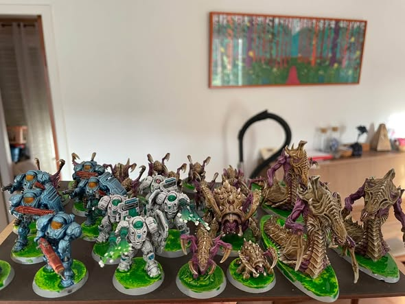

Job du we ! On reprend du service après l été ! Allez objectif finir le set de base marines pour la fin de semaine !… EnAfficher le texte completLire la suite sur FacebookVie du club← Toutes les actualités